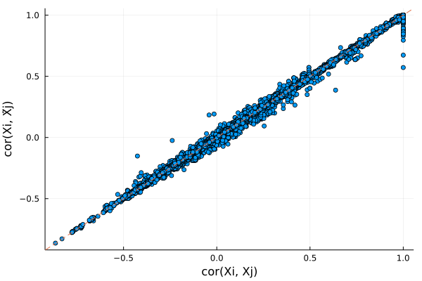
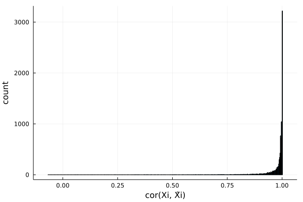

fastPHASE HMM knockoffs
# load packages needed for this tutorial
using SnpArrays
using Knockoffs
using Plots
using Statistics
gr(fmt=:png);This is a tutorial for generating (fastPHASE) HMM knockoffs for genome-wide association studies. This kind of knockoffs is suitable for data without population admixture or cryptic relatedness. The methodology is described in the following paper:
Sesia, Matteo, Chiara Sabatti, and Emmanuel J. Candès. "Gene hunting with hidden Markov model knockoffs." Biometrika 106.1 (2019): 1-18.
If your samples have diverse ancestries and/or extensive relatedness, we recommend those samples to be filtered out, or use SHAPEIT-HMM knockoffs.
Installation
A Julia wrapper for the original fastPHASE software can be installed as fastPHASE.jl, which adds bindings for reading PLINK files. It should be automatically installed with Knockoffs.jl, but you can manually install it by
using Pkg
pkg"https://github.com/biona001/fastPHASE.jl"Step 0: Prepare example data
To illustrate we need example PLINK data, which are available in Knockoffs.jl/data/
mouse.(bed/bim/fam)are mouse genotypes with missing datamouse.imputed.(bed/bim/fam)are genotypes without missing
readdir(Knockoffs.datadir())8-element Vector{String}:
".ipynb_checkpoints"
"mouse.bed"
"mouse.bim"
"mouse.fam"
"mouse.imputed.bed"
"mouse.imputed.bim"
"mouse.imputed.fam"
"subset.ipynb"Step 1: Generate Knockoffs
Knockoffs are made using the wrapper function hmm_knockoff. This function does 3 steps sequentially:
- Run fastPHASE on $\mathbf{X}_{n\times p}$ to estimate $\alpha, \theta, r$
- Fit and generate knockoff copies of the HMM
- Store knockoffs $\tilde{\mathbf{X}}_{n\times p}$ in binary PLINK format (by default under a new directory called
knockoffs) and return it as aSnpArray
# Path to PLINK data (without bed/bim/fam suffix)
mouse = joinpath(normpath(Knockoffs.datadir()), "mouse.imputed")"/Users/biona001/.julia/dev/Knockoffs/data/mouse.imputed"Generate knockoffs
@time X̃ = hmm_knockoff(mouse, plink_outfile="mouse.imputed.knockoffs")seed = 1644263945
This is fastPHASE 1.4.8
Copyright 2005-2006. University of Washington. All rights reserved.
Written by Paul Scheet, with algorithm developed by Paul Scheet and
Matthew Stephens in the Department of Statistics at the University of
Washington. Please contact pscheet@alum.wustl.edu for questions, or to
obtain the software visit
http://stephenslab.uchicago.edu/software.html
Total proportion of missing genotypes: 0.000000
300 diploids below missingness threshold, 0 haplotypes
data read successfully
300 diploid individuals, 10150 loci
K selected (by user): 12
seed: 1
no. EM starts: 1
EM iterations: 10
no. haps from posterior: 0
NOT using subpopulation labels
this is random start no. 1 of 1 for the EM...
seed for this start: 1
-4090352.70909944
-1811045.63155592
-1141902.60403259
-771959.55933310
-610708.68729954
-544178.20323916
-512993.63183391
-495563.69134190
-484778.11388268
-477418.34350641
final loglikelihood: -472148.628952
iterations: 10
writing parameter estimates to disk
simulating 0 haplotype configurations for each individual... done.
[32mProgress: 100%|█████████████████████████████████████████| Time: 0:00:47[39m
simulating 0 haplotypes from model: knockoffs/tmp1_hapsfrommodel.out
172.283679 seconds (70.89 M allocations: 3.871 GiB, 0.61% gc time, 9.13% compilation time)
300×10150 SnpArrays.SnpArray:
0x02 0x02 0x02 0x02 0x03 0x02 … 0x03 0x03 0x03 0x03 0x03 0x03
0x02 0x02 0x02 0x02 0x02 0x02 0x03 0x03 0x03 0x03 0x03 0x03
0x03 0x03 0x03 0x03 0x03 0x03 0x03 0x03 0x03 0x03 0x03 0x03
0x02 0x02 0x03 0x02 0x02 0x02 0x03 0x03 0x03 0x03 0x03 0x03
0x03 0x03 0x03 0x03 0x03 0x03 0x02 0x02 0x02 0x02 0x02 0x02
0x02 0x02 0x02 0x02 0x03 0x02 … 0x03 0x03 0x03 0x03 0x03 0x03
0x02 0x02 0x02 0x02 0x03 0x02 0x03 0x03 0x03 0x03 0x03 0x03
0x02 0x02 0x02 0x02 0x02 0x02 0x03 0x03 0x03 0x03 0x03 0x03
0x02 0x02 0x03 0x02 0x02 0x02 0x03 0x03 0x03 0x03 0x03 0x03
0x03 0x03 0x03 0x03 0x03 0x03 0x02 0x02 0x02 0x02 0x02 0x02
0x03 0x03 0x03 0x03 0x03 0x03 … 0x00 0x00 0x00 0x00 0x00 0x00
0x02 0x02 0x02 0x02 0x03 0x02 0x03 0x03 0x03 0x03 0x03 0x03
0x03 0x03 0x03 0x03 0x03 0x03 0x00 0x00 0x00 0x00 0x00 0x00
⋮ ⋮ ⋱ ⋮
0x00 0x00 0x00 0x00 0x03 0x00 0x03 0x03 0x03 0x03 0x03 0x03
0x02 0x02 0x02 0x02 0x02 0x02 0x00 0x00 0x00 0x00 0x00 0x00
0x02 0x02 0x02 0x02 0x03 0x02 … 0x03 0x03 0x03 0x03 0x03 0x03
0x02 0x02 0x02 0x02 0x03 0x02 0x03 0x03 0x03 0x03 0x03 0x03
0x02 0x02 0x02 0x02 0x03 0x02 0x02 0x02 0x02 0x02 0x02 0x02
0x02 0x02 0x02 0x02 0x03 0x02 0x03 0x03 0x03 0x03 0x03 0x03
0x03 0x03 0x03 0x03 0x03 0x03 0x03 0x03 0x03 0x03 0x03 0x03
0x03 0x03 0x03 0x03 0x03 0x03 … 0x02 0x02 0x02 0x02 0x02 0x02
0x03 0x03 0x03 0x03 0x03 0x03 0x03 0x03 0x03 0x03 0x03 0x03
0x02 0x02 0x02 0x02 0x03 0x02 0x03 0x03 0x03 0x03 0x03 0x03
0x03 0x03 0x03 0x03 0x03 0x03 0x00 0x00 0x00 0x00 0x00 0x00
0x03 0x03 0x03 0x03 0x03 0x03 0x03 0x03 0x03 0x03 0x03 0x03Optional parameters
Here are some optional parameters one can tune when fitting the HMM procedure.
K: Number of haplotype clusters. Defaults to 12C: Number of EM iterations before convergence. Defaults to 10.n: Number of samples used to fit HMM in fastPHASE. Defaults to using all samples
They can be specified via:
@time X̃ = hmm_knockoff(mouse_imputed_file,
plink_outfile="mouse.imputed.knockoffs",
K = 12,
C = 10,
n = 100)Step 2: Examine knockoff statistics
Lets check if the knockoffs "make sense". We will use SnpArrays.jl to import the original and knockoff genotypes, and compare summary statistics using built-in functions comparepairwisecorrelation and compare_correlation
# import original and knockoff genotypes
X = SnpArray(joinpath(normpath(Knockoffs.datadir()), "mouse.imputed.bed"))
X̃ = SnpArray("knockoffs/mouse.imputed.knockoffs.bed")
n, p = size(X̃)(300, 10150)Compare $cor(X_i, X_j)$ and $cor(X_i, \tilde{X}_j)$. If knockoffs satisfy exchangability, their correlation should be very similar and form a diagonal line.
# look at only pairwise correlation between first 200 snps
r1, r2 = compare_pairwise_correlation(X, X̃, snps=200)
# make plot
scatter(r1, r2, xlabel = "cor(Xi, Xj)", ylabel="cor(Xi, X̃j)", legend=false)
Plots.abline!(1, 0, line=:dash)
Plots distribution of $cor(X_j, \tilde{X}_j)$ for all $j$. Ideally, we want $cor(X_j, \tilde{X}_j)$ to be small in magnitude (i.e. $X$ and $\tilde{X}$ is very different).
r2 = compare_correlation(X, X̃)
histogram(r2, legend=false, xlabel="cor(Xi, X̃i)", ylabel="count")